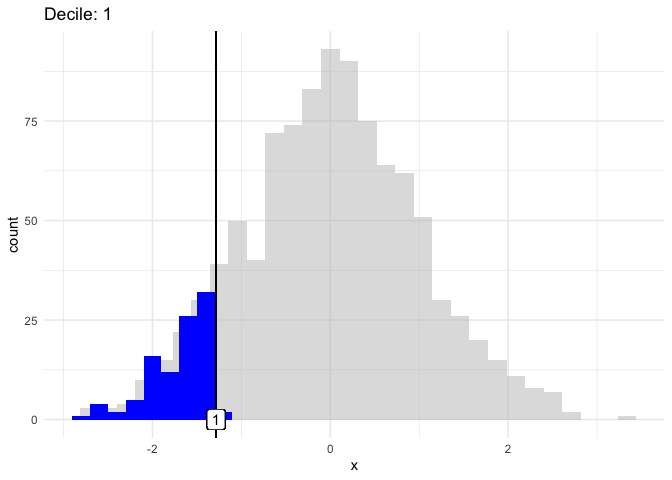

Background
Let’s visualize the quantiles of a normal distribution.
Setup
library(tidyverse)## ── Attaching core tidyverse packages ──────────────────────── tidyverse 2.0.0 ──
## ✔ dplyr 1.1.3 ✔ readr 2.1.4
## ✔ forcats 1.0.0 ✔ stringr 1.5.0
## ✔ ggplot2 3.4.4 ✔ tibble 3.2.1
## ✔ lubridate 1.9.3 ✔ tidyr 1.3.0
## ✔ purrr 1.0.2
## ── Conflicts ────────────────────────────────────────── tidyverse_conflicts() ──
## ✖ dplyr::filter() masks stats::filter()
## ✖ dplyr::lag() masks stats::lag()
## ℹ Use the conflicted package (<http://conflicted.r-lib.org/>) to force all conflicts to become errorslibrary(gganimate)
set.seed(123)Simulate normal data
n <- 1000
data <- data.frame(x = rnorm(n))
data$decile <- cut(data$x, breaks = quantile(data$x, probs = seq(0, 1, 0.1)), include.lowest = TRUE)
data$decile2 <- cut(data$x, breaks = quantile(data$x, probs = seq(0, 1, 0.1)), include.lowest = TRUE, labels = 1:10)Using decile and decile2 we have marked for each data point to which decile it belongs.
Build up the data frame
data2 <-
data |>
group_by(decile2) |>
mutate(x_max = max(x))
data3 <-
data2 |>
ungroup() |>
select(x)And plot:
p <-
ggplot(data2, aes(x = x)) +
geom_histogram(data = data3, fill = "grey", alpha = .5, color = NA) +
geom_histogram(binwidth = 0.2, fill = "blue", color = NA) +
geom_vline(aes(xintercept = x_max)) +
geom_label(aes(label = decile2, x = x_max), y= 0) +
theme_minimal()
p## `stat_bin()` using `bins = 30`. Pick better value with `binwidth`.
And now: animate
animated_plot <-
p +
transition_states(decile2, transition_length = 2, state_length = 1) +
ggtitle("Decile: {closest_state}") +
enter_fade() +
exit_fade()
And safe to disk:
anim_save("normal_distribution_animation.gif", animated_plot, renderer = gifski_renderer())